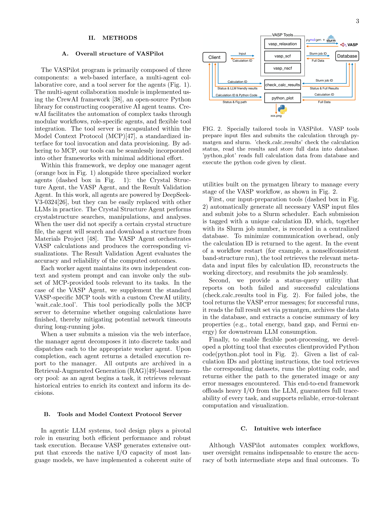

Figure 1
VASP(Vienna Ab initio Simulation Package) 기반 밀도범함수이론(DFT) 시뮬레이션을 완전 자동화하는 오픈소스 멀티 에이전트 플랫폼 VASPilot을 소개한다. CrewAI 프레임워크와 Model Context Protocol(MCP)을 기반으로 구축되며, Manager Agent + 3개 특화 Worker Agent(Crystal Structure Agent, VASP Agent, Result Validation Agent)가 결정 구조 검색, 입력 파일 생성, Slurm 작업 제출, 오류 파싱 및 파라미터 자동 조정, 결과 시각화까지 전 과정을 수행한다. 2H-MoS2의 밴드 구조/DOS 계산, ENCUT 수렴 테스트, 다양한 van der Waals 보정에 따른 격자 상수 최적화, 전이금속 디칼코게나이드(TMD) 밴드갭 비교 등의 벤치마크에서 수동 개입 없이 성공적으로 완료되었다.
DFT 계산은 재료 과학에서 필수적이지만, VASP 워크플로는 입력 파일 준비, 작업 제출, 모니터링, 오류 처리, 후처리 등 상당한 수동 작업을 요구한다. VASPKIT, ASE, Pymatgen 등 기존 도구가 일부 부담을 덜어주지만, 다양한 물질/조건을 비교하는 복잡한 연구 시나리오에서는 여전히 반복적인 스크립트 작성과 작업 관리가 필요하다. LLM 기반 멀티 에이전트 시스템이 이 문제를 해결할 잠재력이 있으나, VASP에 특화된 MAF(Multi-Agent Framework)는 부재했다. 특히 zero-shot 미션(사전 예제 없는 복잡 태스크) 처리와 직관적 사용자 인터페이스가 미해결 과제이다.
#### 1. CrewAI 기반 멀티 에이전트 코어
| 에이전트 | 역할 | 도구 |
|---|---|---|
| Manager Agent | 미션 분해, 태스크 위임, 결과 종합 | - |
| Crystal Structure Agent | 결정 구조 검색/조작/분석 | search_MP (Materials Project) |
| VASP Agent | VASP 계산 실행/시각화 | vasp_relaxation, vasp_scf, vasp_nscf, wait_calc, python_plot |
| Result Validation Agent | 계산 결과 정확도/신뢰성 검증 | check_file_exist, read_calc_results, check_calc_results |
#### 2. MCP(Model Context Protocol) 도구 서버
#### 3. Flask 기반 웹 인터페이스
총평: MCP 기반 멀티 에이전트로 DFT 계산을 자동화하는 VASPilot은 실용적 접근이나 평가 규모와 오류 처리 강건성에서 개선이 필요하다.